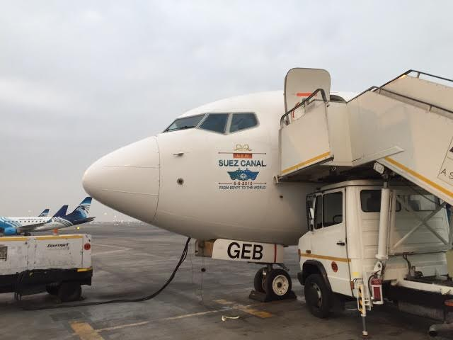

أحدث الأخبار
- القضاء الإداري يقضي بحل اتحاد الكرة وبطلان الانتخابات الأخيرة
- مقتل 3 أشخاص وإصابة 3 آخرين في حادث مروري بالبحيرة
- وزير الخارجية يجري اتصالاً مع رئيس المجلس الرئاسي الليبي
- عاصمة مصر تتجه لزيادة سكانية نصف مليون العام الجاري
- باولو يقود هجوم الزمالك أمام رينجرز في دوري الأبطال
- المالية تعفي المطاعم غير السياحية من ضريبة القيمة المضافة بشروط
- "القضاء الإداري" يلزم الجامعة الأمريكية بتحصيل مصروفاتها بالجنيه المصري
- البورصة ترتفع بنسبة 0.52% في نهاية التعاملات
قناة السويس الجديدة بين الشكوك والآمال

قناة السويس الجديدة بين الشكوك والآمال
- حفر وتعميق قناة السويس ليس نهاية المطاف
- الحكومة نجحت في اختبار الوقت في مشروع القناة.. والإيرادات التحدي التالي
- حكايات "الأرزقية" والمنسيين في حفر قناة السويس الجديدة
- على عهدة الحكومة.. زيادة محدودة في إيرادات قناة السويس في العام الأول للتفريعة الجديدة

- ملك السعودية وبوتين وأولوند ورئيس الصين.. أبرز المدعوين لافتتاح القناة
- ذا ناشونال: حفل افتتاح قناة السويس الجديدة يغسل يديه من ذكريات افتتاح القناة القديمة
ماهي المزايا التي سيتمتع بها المستثمرون في محور قناة السويس؟

- القوات المسلحة تنهي استعدادات تأمين افتتاح قناة السويس.. وانتشار مكثف للمجموعات القتالية
- وزير التخطيط: 9% نموا في إيرادات قناة السويس خلال العام الجاري بعد افتتاح القناة الجديدة

- "مصر للطيران" تدشن حملة دعائية للاحتفال بافتتاح قناة السويس الجديدة

- قائد القوات الجوية: طائرات F-16 ستشارك في حفل قناة السويس الجديدة
- مميش: قناة السويس الجديدة آمنة ملاحيا وجاهزة للتشغيل
- المالية تصدر قطعا ذهبية تذكارية لتوزيعها على المشاركين في افتتاح قناة السويس الجديدة

- شركة مصر للطيران: تخفيضات "غير مسبوقة" لضيوف حفل افتتاح قناة السويس الجديدة
- هيئة قناة السويس تدعو المواطنين للمشاركة بصورهم الشخصية في حفل افتتاح القناة الجديدة
- هيئة قناة السويس تجري قرعة بين المواطنين لاختيار من سيحضر حفل افتتاح القناة الجديدة
- صفحتا الرئيس على فيسبوك وتويتر تدشنان هاشتاج #مصر_بتفرح احتفالا بقناة السويس الجديدة
- مميش: تجربة التشغيل التجريبي لعبور القناة الجديدة ناجحة
- ناهد عشري: 41 ألفا و696 عاملا جاهز للعمل في مشروعات قناة السويس الجديدة
- عرض أكثر من 40 قطعة أثرية من اكتشافات قناة السويس بالمتحف المصري
- ماهي المزايا التي سيتمتع بها المستثمرون في محور قناة السويس؟
- "عمر أفندي" يقنع محلب بتقديم "هدايا تراثية" في حفل افتتاح قناة السويس الجديدة
- مصادر أمنية: خطة تأمين احتفال قناة السويس الجديدة تشمل 10 آلاف ضابط و230 مجموعة قتالية
- الهيئة العامة للاستعلامات تصدر كتابا لتوثيق أعمال حفر قناة السويس الجديدة
- وزير الآثار يفتتح المعرض المؤقت عن قناة السويس بمتحف السويس القومي
- وفد كوري جنوبي يزور مصر لحضور حفل افتتاح قناة السويس الجديدة
- مميش: الحكومة ستصدر قرارات بتحديد المناطق الاقتصادية الخاصة لمشروع قناة السويس قريبا

- الجابر: قناة السويس الجديدة سيكون لها تأثير إيجابي في تنشيط التجارة الدولية
- هيئة البريد تخصص مكاتب لخدمة العاملين بمشروع قناة السويس الجديدة وتصدر طابعا بهذه المناسبة
- الغطاس ولاء حافظ يعتزم تحقيق رقم قياسي عالمي بالغوص في أعماق قناة السويس الجديدة
- وزير الآثار يفتتح متحف الإسماعيلية القومي ويسمح للمواطنين بدخوله مجانا حتى نهاية أغسطس
- على عهدة الحكومة.. زيادة محدودة في إيرادات قناة السويس في العام الأول للتفريعة الجديدة
- الداخلية: إعفاء أول 5 مواطنين من رسوم استخراج الوثائق الرسمية احتفالا بافتتاح القناة الجديدة
- بالفيديو: أجهزة الدولة تعزف على ألحان الأغنية الوطنية للاحتفال بقناة السويس الجديدة
- ميرسك: نسعى لإقناع قناة السويس بإدخال تعديلات على نظام الملاحة تسمح بعبور حمولات أكبر
- أول كتاب يوثق بخمس لغات رحلة "المحروسة" كأثر مصري من أقدم اليخوت في العالم
- وزير: طرح 45 مشروعا لمستثمرين سعوديين.. و100 مليار دولار حجم الاستثمارات المتوقعة بالقناة الجديدة
- وزير: 8 أنفاق أسفل قناة السويس الجديدة تحمل مياة الري لزراعة مائة ألف فدان
- السيسي: حفر قناة السويس الجديدة خطوة من ألف خطوة.. ومصر ليست بلد المشروع الواحد
- السيسي يغازل أحلام المصريين وسط أجواء احتفالية لافتتاح قناة السويس الجديدة
- هيئة قناة السويس: ضغط مدة تنفيذ المشروع لعام واحد هو الذي اضطرنا للاعتماد على كراكات أجنبية
- مستشار وزير النقل: سنبدأ فورا حفر قناة فرعية بشرق بورسعيد ومفاوضات لزيادة حصة ميرسك في التكلفة
- شرق بورسعيد يسعى لجذب 10 شركات ملاحة عالمية بعد افتتاح قناة السويس الجديدة


تعليقات الفيسبوك